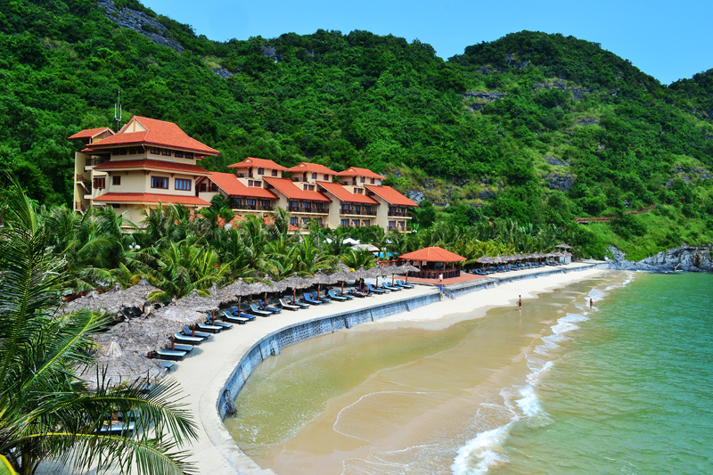
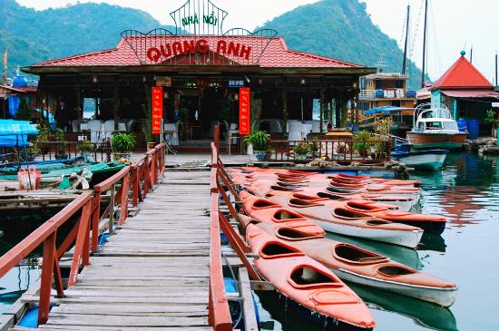
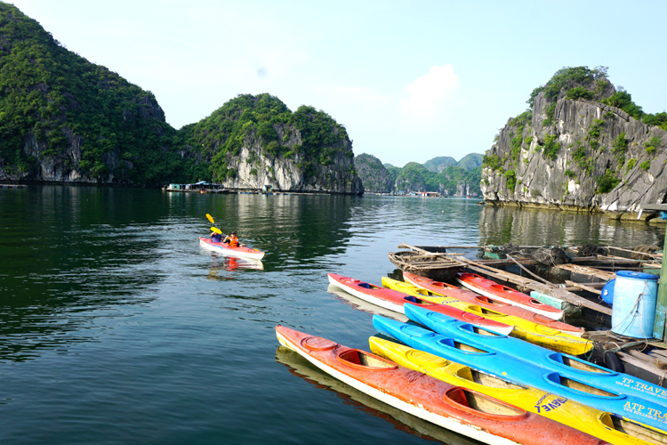

Hải Phòng - Ăn và Chơi
Cùng khám phá các địa điểm check-in và ăn vặt số 1 tại Hải Phòng
Cát Bà
Cát Bà - Huyện đảo của thành phố Hải Phòng là một quần đảo gồm 367 đảo trong đó đảo lớn nhất là đảo Cát Bà, đã được UNESCO công nhận là khu dự trữ sinh quyển thế giới, đồng thời đây còn được ví là một Vịnh Hạ Long thu nhỏ với danh thắng thiên nhiên kỳ vĩ.
Bãi biển Cát Bà:
Trên đảo Cát Bà có 3 bãi tắm tự nhiên lớn là Cát Cò 1, Cát Cò 2 và Cát Cò 3 trong đó Cát Cò 1 có không gian rộng và
nhộn nhịp nhất thích hợp tổ chức team buiding, Cát Cò 2 thì hẹp và yên tĩnh hơn trong khi Cát Cò 3 có nước khá sâu
và sóng mạnh hơn nên sẽ phù hợp hơn với những du khách có kinh nghiệm bơi lội.
Bên cạnh khai thác dịch vụ du lịch thì người dân Cát Bà còn nuôi trồng thuỷ hải sản và một số nhà hàng ăn đã khai
thác ngay những bè nuôi thuỷ hải sản này để tạo không gian ẩm thực rất riêng và thú vị.

Vịnh Lan Hạ, Vườn quốc gia Cát Bà:
Du khách tới đây còn có nhiều lựa chọn khác như đi bộ khám phá Vườn quốc gia Cát Bà với nhiều loại động thực vật quý hiếm và chinh phục những đỉnh núi đá vôi để đến những địa điểm check-in đẹp mê người:
Hoặc bạn cũng có thể lên thuyền và đi khám phá Vịnh Lan Hạ và tham gia nhiều hoạt động thú vị như tắm biển, thăm quan hệ thống hang động, chèo thuyền Kayak...
Vẻ đẹp Vịnh Lan Hạ - Cát Bà
Chèo thuyền trên Vịnh Lan Hạ
Cách đi Cát Bà
Từ Hà Nội đi Hải Phòng bằng xe khách hoặc ô tô tự lái theo đường cao tốc Hà Nội – Hải Phòng (QL5B), từ điểm cuối của QL5B
tiếp tục di chuyển qua cầu Tân Vũ - Lạch Huyện để đến đảo Cát Hải, sau đó đi phà đến Cát Bà.
Nếu bạn thích cảm giác lướt trên những ngọn sóng bạn có thể lựa chọn tuyến đường đi tới trung tâm thành phố
Hải Phòng sau đó đi tàu cao tốc từ Bến Bính - Hải Phòng đến Cát Bà.
Nổi bật

Tuyệt Tình Cốc
Địa điểm sống ảo hot nhất Vịnh Bắc Bộ sẽ đưa bạn lạc vào thế giới cổ trang.
Hỏi thế gian tình ái là chi...